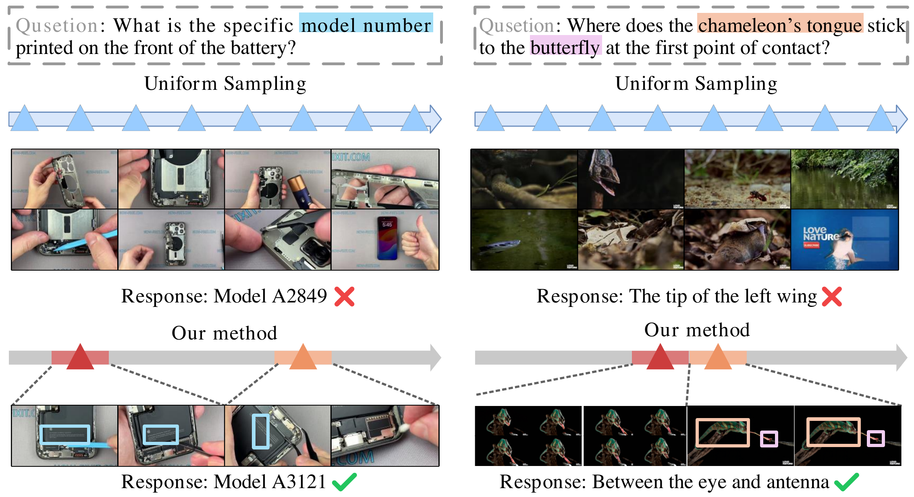

Evidence Grounding
A sparse-prefill pass over compressed frames approximates the target MLLM's attention map and preserves the evidence structure needed for downstream selection.
Long Video Understanding
Evidence-Driven Dynamic Visual Selector for Efficient Long Video Understanding
Recent advancements in MLLM-based long-form video understanding have mitigated inference-time computational cost and limited context lengths by selecting query-relevant frames. However, existing approaches predominantly rely on external proxy scorers and rigid heuristic rules, inevitably suffering from misalignment with the target MLLM's intrinsic evidence and failing to accommodate the non-uniform spatiotemporal information density. We propose a fine-grained dynamic visual selection framework named EviSelect, grounded in the target MLLM's internal attention evidence. Our method efficiently probes visual evidence via sparse prefilling as a structured prior to guide distribution-aware dynamic sampling.
Specifically, we efficiently approximate attention maps of the target MLLM using highly compressed visual inputs and sparse attention, well aligned to the full counterpart. Conditioned on three complementary attention components derived from this prior, we design a lightweight selector that not only precisely locates query-relevant timestamps but also adaptively adjusts the local sampling rate and spatial resolution. To enable evidence-conditioned spatiotemporal sampling, we formulate the selector as a stochastic policy and optimize it via GRPO under a joint accuracy-efficiency reward. Across three long video understanding benchmarks, EviSelect achieves superior performance compared to existing methods while reducing selected visual tokens by about 50% and achieving a 3.9x end-to-end speedup.

A sparse-prefill pass over compressed frames approximates the target MLLM's attention map and preserves the evidence structure needed for downstream selection.
The selector uses query-frame, inter-frame, and intra-frame cues to decide where to retain video content, where to sample densely, and where to spend spatial resolution.
GRPO trains the selector with a joint accuracy-efficiency reward, so visual computation is rewarded only when it supports correct answers.
| Model | Avg. Selected Tokens | LLM Size | Selector | LongVideoBench | MLVU | Video-MME | |
|---|---|---|---|---|---|---|---|
| Val | Dev | Long | Avg | ||||
| Closed-Source MLLM | |||||||
| GPT-4o | - | - | Uniform | 66.7 | 64.6 | 65.3 | 71.9 |
| GPT-4V | - | - | Uniform | 61.3 | 49.2 | 53.5 | 59.9 |
| Gemini-1.5-Flash | - | - | Uniform | 61.6 | - | 61.1 | 70.3 |
| Gemini-1.5-Pro | - | - | Uniform | 64.0 | - | 67.4 | 75.0 |
| Open-Source MLLM | |||||||
| Video-LLaVA | 2048 | 7B | Uniform | - | 36.2 | - | 39.9 |
| Qwen-VL | 2048 | 7B | Uniform | - | - | 37.8 | 41.1 |
| Oryx-1.5 | 14400 | 7B | Uniform | 56.3 | - | 51.2 | 58.8 |
| LLaVA-Onevision | 6272 | 7B | Uniform | 56.4 | 64.7 | 46.7 | 58.2 |
| NVILA | 8192 | 7B | Uniform | 57.7 | 70.1 | 54.8 | 64.2 |
| Apollo | 2FPS | 7B | Uniform | 58.5 | 68.7 | - | 61.3 |
| LongVU | 1FPS | 7B | DINOv2 | - | 65.4 | - | 60.6 |
| LLaVA-Video-7B Selector Comparison | |||||||
| LLaVA-Video-7B* | 3360 | 7B | Uniform | 57.4 | 64.4 | 51.3 | 60.3 |
| +AKS | 3360 | 7B | CLIP | 61.6 | - | - | 62.2 |
| +TSPO* | 3360 | 7B | TSPO-0.4B | 61.4 | 68.2 | 52.9 | 62.1 |
| +EviSelect | 1701 | 7B | 0.1B | 62.1 | 69.1 | 53.7 | 64.0 |
| Qwen2.5-VL-7B Selector Comparison | |||||||
| Qwen2.5-VL-7B* | 2912 | 7B | Uniform | 55.4 | 54.3 | 48.9 | 57.1 |
| +FastV + DyToK | 1568 | 7B | - | 54.5 | 43.3 | - | 58.8 |
| +Q-Frame | 2912 | 7B | CLIP | 57.37 | 56.81 | 49.02 | - |
| +DIG | 2912 | 7B | DINOv2 | 57.89 | 63.98 | 51.93 | - |
| +TSPO* | 2912 | 7B | TSPO-0.4B | 58.1 | 65.1 | 52.1 | 59.1 |
| +EviSelect | 1439 | 7B | 0.1B | 59.2 | 66.1 | 53.0 | 60.8 |
On both LLaVA-Video-7B and Qwen2.5-VL-7B, EviSelect improves over prior selector-based methods while using substantially fewer answer-stage visual tokens. The table follows the main benchmark comparison from the source LaTeX table; "*" denotes reproduced results.
| Method | Selected Tokens | Latency (s) | ||
|---|---|---|---|---|
| Selection | MLLM | Overall | ||
| Uniform | 3360 | 0.0 | 0.78 | 0.78 |
| CoS | 13440 | 28.4 | 2.70 | 31.10 |
| TSPO | 3360 | 9.2 | 0.78 | 9.98 |
| EviSelect | 1701 | 2.1 | 0.45 | 2.55 |
The efficiency comparison measures the complete selection stage and the downstream MLLM answer stage. EviSelect reduces TSPO's overall latency from 9.98 s to 2.55 s while also lowering selected tokens.

@misc{zhang2026evidencedriven,
title={Evidence-Driven Dynamic Visual Selector for Efficient Long Video Understanding},
author={Zhang, Bo and Wang, Wenxin and Chen, Feng and Zhang, Zhihao and Wang, Zixuan and Li, Changsheng and Lei, Yinjie},
year={2026},
eprint={2608.05780},
archivePrefix={arXiv},
primaryClass={cs.CV},
url={https://arxiv.org/abs/2608.05780}
}